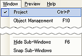
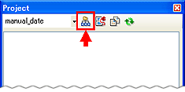
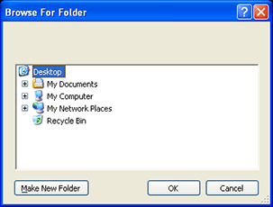
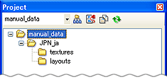
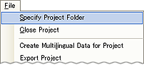

作業開始時にプロジェクトフォルダを指定します。
TWL-ManualEditorでは、ページファイルと画像ファイルをプロジェクトフォルダの中の各言語フォルダで管理します。
そのため、作業開始時にプロジェクトフォルダを指定する必要があります。
新たに任意のプロジェクトフォルダを指定すると、プロジェクトフォルダの中に言語フォルダが作られ、その中に画像ファイルを格納する{texturs}フォルダと、ページファイルを格納する{layouts}フォルダが、作成されます。
言語フォルダ（XXXは大文字のアルファベット３文字、yyは小文字のアルファベット２文字）で、各言語によって名称が異なります。
プロジェクトに指定したフォルダに言語フォルダが無い場合は{JPN_ja}フォルダが作成されます。
ページで使用する画像ファイルを格納するフォルダで、言語フォルダの中に作成されます。
ページファイルを格納するフォルダで、言語フォルダの中に作成されます。
ニンテンドーDSiウェア 電子取扱説明書は、この{layouts}フォルダ内のページファイルで構成されます。
TWL-ManualEditorを起動し、メインメニューの[ウィンドウ]→[プロジェクト]で、プロジェクトウィンドウを開きます。

表示されたプロジェクトウィンドウで、「プロジェクトフォルダの指定」アイコンをクリックします。

フォルダの参照ダイアログが開きますので、任意のフォルダを指定して、「OK」ボタンをクリックします。

指定したフォルダ内に言語フォルダと、２つのフォルダ{textures}{layouts}が自動生成されます。

エディタを起動し、メインメニューの[ファイル]→[プロジェクトフォルダの指定]を選択します。

フォルダの参照ダイアログが開きますので、任意のフォルダを指定して、「OK」ボタンをクリックします。
指定したフォルダ内に言語フォルダと、２つのフォルダ{textures}{layouts}が自動生成されます。